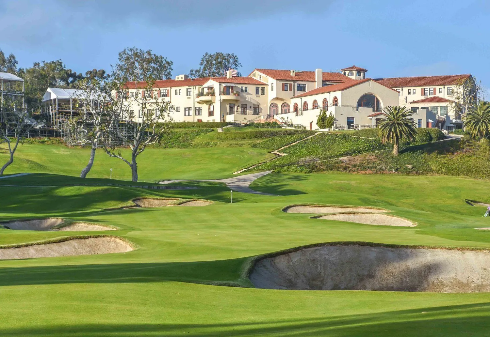
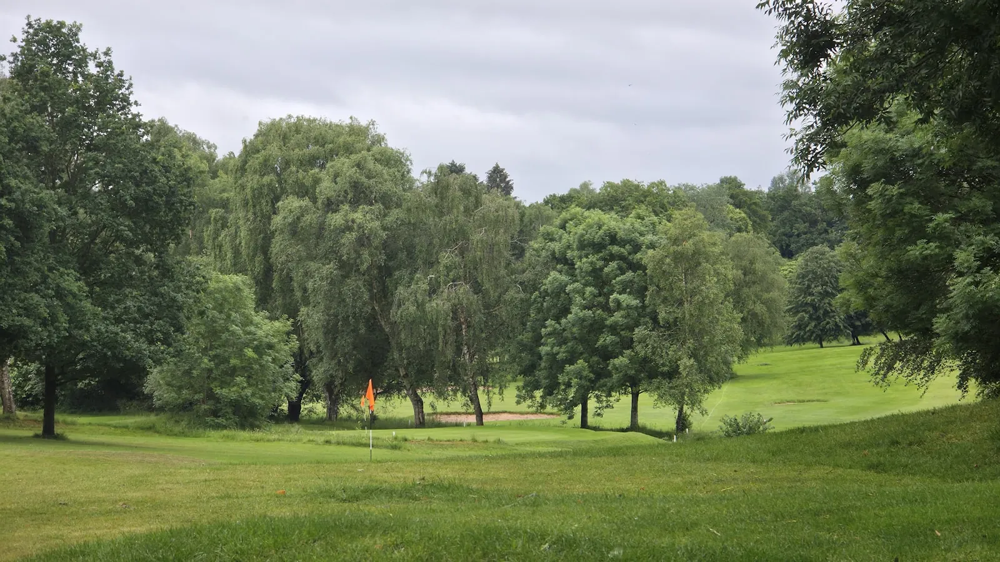

Riviera Country Club
· By GoldenPath Guide Editorial Team
If you asked a tour pro to name a course with no weaknesses, a lot of them would answer the Riviera Country Club. Tucked into the canyons of Pacific Palisades near Los Angeles, it's routinely ranked among the finest courses in California and the world — a George Thomas and William Bell design from 1926 that set the template for the Golden State's golden-age golf. It is also, like most of the state's truly great layouts, a private club. But its story is worth knowing, and there are ways to get close to its legacy even if you can't get a tee time. In the canyons, the air stays cool and shaded, and the eucalyptus give off their sharp, clean scent in the late light.

Why Riviera is so admired
Riviera is the kind of course that seems to have been carved out of the land rather than built on it. It winds through mature trees and rolling canyon terrain, with a routing that feels both natural and strategically elegant. Its par-3 6th — with its sunken, bunker-free green — is legendary, the kind of hole pros love to debate. The course demands precision and imagination in equal measure, which is why the game's best hold it in such high regard.
Its place in golf history
Riviera has been a fixture on the PGA Tour for generations. It hosts the Genesis Invitational, an event long associated with some of the game's biggest names, and the club's trophy shelf includes decades of championship golf. Watching the pros navigate its demanding greens gives you a real sense of why it's so respected — and why it's tougher than many more famous courses.
Can you play it?
Riviera is a private club, so public tee times aren't available. The realistic way to experience it is as a spectator at the Genesis Invitational, held each February. Walking the course during a tour event — hearing the club choices debated, watching how the pros attack the par-3 6th — brings its design genius into focus. On the hillside the crowd goes quiet, then murmur, as a shot hangs in the air, and the late February light settles soft over the fairways.
Alternatives in the LA area
If you want to play a memorable round near Los Angeles without a membership, these public courses deliver a taste of the golden age:
- Rustic Canyon (Moorpark) — a rare, walkable, linksy public design that many consider among America's best.
- Hacienda Golf Club (La Habra) — a beautifully preserved classic that's surprisingly accessible.
- Los Angeles Royal Vista and the city's other municipal tracks — surprisingly solid, budget-friendly options.
- Pelican Hill (Ocean North & South) (Newport Coast) — resort-accessible and spectacularly scenic on the coast.
Getting there
Riviera sits in Pacific Palisades, roughly 20 minutes from Santa Monica and a short drive from downtown Los Angeles. If you're attending the tournament, arrive early — parking and traffic around the club fill quickly on the weekend. On the drive home, the ocean opens up to the west, low and silver in the afternoon glow.
George Thomas Design: What to Look For
Even as a spectator, Riviera teaches design. Thomas built the course in 1926 around the canyon’s natural folds rather than flattening them, so holes bend with the terrain instead of against it. The famous par-3 6th has no bunker guarding its sunken green — a deliberate provocation that forces precision over power. The par-4 10th, one of the shortest par 4s in championship golf, tempts long hitters to drive the green while punishing anything slightly off line. Watch how the pros play these holes during tournament week: layup versus heroics, and the geometry of angles Thomas set a century ago still deciding modern scores. That design language — strategy over sheer length — is what made Thomas and Bell’s work the template for California’s golden-age courses.
Genesis Week & Spectator Planning
The Genesis Invitational lands each February, usually the third week, drawing fields of 70–80 players and weekend galleries above 25,000. Daily grounds tickets typically run $75–$125, with weekly badges several hundred dollars; hospitality packages climb far higher. Gates open around 7am with the first tee times near 7:30am. Parking operates off-site with shuttles from Santa Monica and Westwood lots, so budget 45 minutes each way. Sunscreen, a collapsible stool and a course map matter more than an autograph pen — phone cameras are restricted inside the ropes on competition days. Thursday and Friday bring thinner crowds and easier movement between holes 6, 10 and 18.
Design Details & Scorecard Numbers
George Thomas routed Riviera across a former riverbed in 1926, and the 7,279-yard par-71 layout climbs in and out of the barranca canyon on 10 of 18 holes. Kikuyu grass fairways and poa annua greens run firm in February, with green speeds near 12 on the stimpmeter during tournament week. The par-4 10th measures barely 315 yards yet ranks among the toughest short par 4s in championship golf because the narrow green tilts hard toward the canyon. Total bunkers number around 60, modest by modern standards, yet placement near every landing zone keeps them in play. Walkers cover 6–7 miles following a full round, with 100-plus feet of elevation between the clubhouse and the lowest fairways.
Best Playable Courses in California
Best Public Golf Courses
Palm Springs & Desert Golf